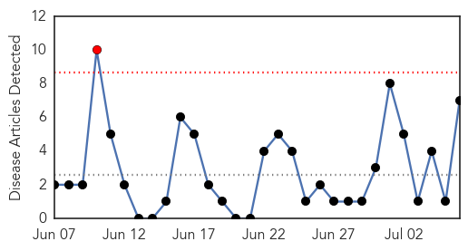

30 Day Trends
Web: 1 alerts, 0 warnings
Twitter: 0 alerts, 0 warnings
Top Articles:
- 0.742
- Immigrant Kids In Texas Receive Adult Dose Of Hepatitis A Vaccine
- 0.647
- Sexual Health and Gender Inequality in Venezuela
- 0.623
- Fellow Board-certified Pediatrician Blasts Senator Dr. Pan for California Bill that Removes Medical Freedom
- 0.578
- 250 children in Texas given adult dosages of hepatitis A vaccine
- 0.572
- Sydney dentist scare: Patients could sue clinics over HIV and hepatitis exposure
- 0.513
- Vaccine Mix-up: Children Receive Adult Dosage
- 0.510
- 1,418 Zimbabwean bodies repatriated from SA
Top Tweets:
-
No tweets found for Jul 06, 2015
Web/News Articles
Tweets